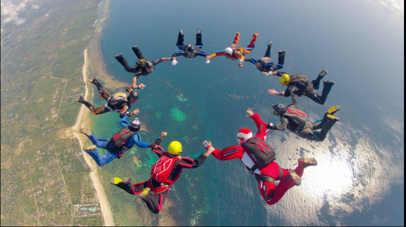

Mount Kenya Trekking

Mount Kenya offers various trekking routes for adventure enthusiasts. Treks to the summit of Mount Kenya, the second-highest mountain in Africa, provide stunning views and unforgettable experiences.
Charge per day: $50
Masai Mara Balloon Safari

A hot air balloon safari over the Masai Mara National Reserve offers a unique perspective of the wildlife and landscapes below. It's a thrilling adventure that allows visitors to witness the beauty of the savannah from above.
Charge per day: $200
Hell's Gate National Park Cycling

Hell's Gate National Park is a popular destination for cycling adventures. The park's rugged terrain, towering cliffs, and geothermal attractions provide an exhilarating cycling experience amidst stunning natural scenery.
Charge per day: $30
Diani Beach Skydiving
Skydiving over Diani Beach offers an adrenaline-pumping adventure with breathtaking views of the coastline and Indian Ocean. It's an unforgettable experience for thrill-seekers looking to soar above the Kenyan coast.
Charge per day: $300
Aberdare National Park Canopy Walk

The Aberdare National Park features a thrilling canopy walkway suspended above the forest canopy. Walking along the canopy offers a unique perspective of the park's lush vegetation and wildlife.
Charge per day: $20